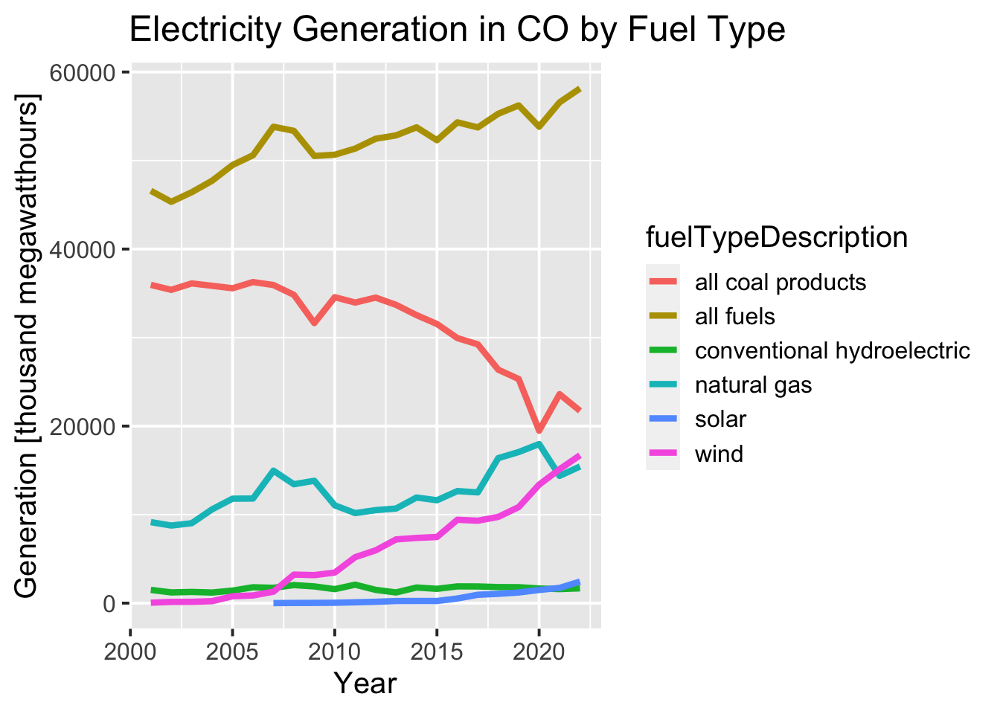
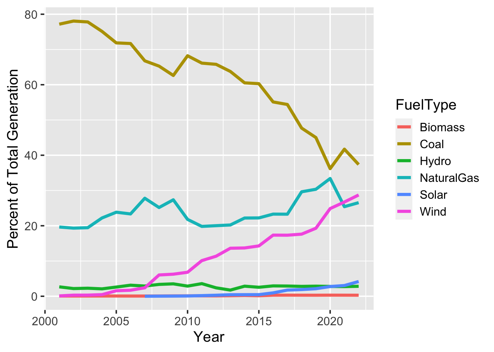
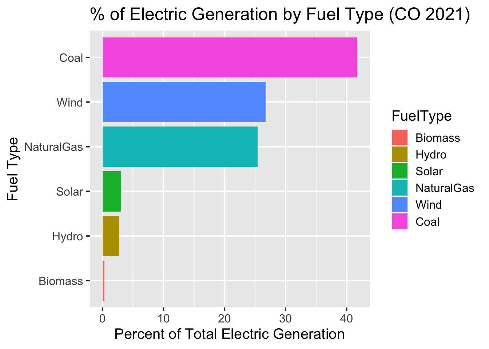

Introduction
Electricity generation is a major source of carbon emissions, and transitioning to cleaner and/or renewable sources of power generation is important to lowering greenhouse gas emissions and limiting the effects of climate change (as well as other benefits such as improving air quality). With the increase in electrification (such as electric vehicles and heat pumps), transitioning to lower-carbon sources of electricity generation is even more important.
In general electric vehicles produce less net emissions than traditional gas-powered vehicles, but the savings depends on several factors including how the electricity used to charge an EV is produced. The Alternative Fuels Data Center has a nice tool showing the breakdown of electricity generation fuel sources by state and the resulting effects on emissions.
I am interested in analyzing trends in electricity generation fuel sources, and this post outlines the first step: Using data from the EIA to calculate and reproduce the state-level breakdown in the AFDC tool.
Some of the technical methods/topics involved in this include:
Retrieving data from an API
Pivoting data between long and wide formats
Plotting data using the ggplot2 (Wickham 2016) and plotly (Sievert 2020) packages
I’m going to make a simple little function to retrieve data from the API, that will make things a little tidier and warn me if the API call returns an error code.
The data I will use is the annual electric power generation by state from the EIA API. I’m going to just look at data for Colorado for now, and I’m looking at sector id 98: electric power.
Code
# API key stored in .Renviron
api_key <- Sys.getenv("EIA_KEY")
# base url for EIA API V2
api_base <- "https://api.eia.gov/v2/"
route <- 'electricity'
subroute <- "electric-power-operational-data"
data_name <- 'generation'
state <- 'CO'
# sectorid 98= electric power
sector_id <- 98
# annual
complete_api_path <- paste0(api_base,route,'/',subroute,'/','data/',
'?frequency=annual&data[0]=',data_name,
'&facets[sectorid][]=',sector_id,
'&facets[location][]=',state,
'&api_key=',api_key)
response_raw <- retrieve_api_data(complete_api_path)
dat <- jsonlite::fromJSON(httr::content(response_raw,"text"))No encoding supplied: defaulting to UTF-8.Code
year fueltypeid fuelTypeDescription generation generation-units
1 2001 ALL all fuels 46582.114 thousand megawatthours
2 2001 BIT bituminous coal NA thousand megawatthours
3 2001 DFO distillate fuel oil 158.640 thousand megawatthours
4 2001 FOS fossil fuels 45257.257 thousand megawatthours
5 2001 NG natural gas 9146.986 thousand megawatthours
6 2001 ORW other renewables 32.102 thousand megawatthoursNote that some of the fueltype categories are subsets of, or overlap with, other categories. For example COW is all coal products, which includes SUB (subbituminous coal) and BIT (bituminous coal). For this analysis I will look at the following categories:
ALL
COW (all coal)
Natural Gas
WND : Wind
SUN : Solar
HYC: conventional hydroelectric
BIO: Biomass
Note that Colroado currently has no nuclear production but other states may include this.
Plot total electricity generation by fuel type
Code
df %>%
filter(fueltypeid %in% c('ALL','COW','NG','SUN','WND','HYC')) %>%
ggplot(aes(year,generation,group=fuelTypeDescription))+
geom_line(aes(color=fuelTypeDescription),linewidth=1.5)+
xlab("Year")+
ylab(paste0('Generation [',df$`generation-units`[1],']'))+
ggtitle(paste0("Electricity Generation in ",state," by Fuel Type"))
Compute percent of total generation by fuel type
Now I want to compute the percent of total generation that each fuel type makes up. Currently the dataframe has a row for each year and fuel type. To make it easier to compute, I need to pivot the data frame to a wide format, so there is one row for each year and a column for each fuel type. Then I can simply divide the value for each fuel type by the total.
You may be familiar with the pivot functions under different names. In the tidyr package, pivot_wider and pivot_longer are newer versions of spread and gather, respectively.
Pivot to wider format:
Code
df_wide <- df %>%
select(year,generation,fueltypeid) %>%
tidyr::pivot_wider(names_from = fueltypeid, values_from = generation)
head(df_wide)# A tibble: 6 × 11
year ALL FOS NG WND COW HPS REN BIO HYC SUN
<int> <dbl> <dbl> <dbl> <dbl> <dbl> <dbl> <dbl> <dbl> <dbl> <dbl>
1 2001 46582. 45257. 9147. 48.6 35951. -251. NA 32.1 1495. NA
2 2002 45337. 44179. 8765. 139. 35388. -220. NA 29.8 1209. NA
3 2003 46417. 45180. 9026. 147. 36116. -204. 1441. 31.5 1262. NA
4 2004 47718. 46460. 10597. 220. 35848. -192. 1450. 35.0 1195. NA
5 2005 49492. 47388. 11799. 776. 35570. -122. 2226. 34.3 1415. NA
6 2007 53816. 50929. 14963. 1292. 35936. -168. 3054. 31.1 1730. 2.21Compute percent of total for fuel types:
Code
# A tibble: 6 × 7
year perc_Solar perc_Wind perc_Coal perc_NaturalGas perc_Hydro perc_Biomass
<int> <dbl> <dbl> <dbl> <dbl> <dbl> <dbl>
1 2001 NA 0.1 77.2 19.6 2.67 0.07
2 2002 NA 0.31 78.1 19.3 2.18 0.07
3 2003 NA 0.32 77.8 19.4 2.28 0.07
4 2004 NA 0.46 75.1 22.2 2.1 0.07
5 2005 NA 1.57 71.9 23.8 2.61 0.07
6 2007 0 2.4 66.8 27.8 2.9 0.06Now that I’ve computed the percent for each fuel type, I want to pivot back to a long format that will make plotting easier:
Code
df_perc_long <- df_perc %>%
tidyr::pivot_longer(cols = starts_with('perc_'),
names_prefix = 'perc_',
names_to = 'FuelType',
values_to = 'percent')
head(df_perc_long)# A tibble: 6 × 3
year FuelType percent
<int> <chr> <dbl>
1 2001 Solar NA
2 2001 Wind 0.1
3 2001 Coal 77.2
4 2001 NaturalGas 19.6
5 2001 Hydro 2.67
6 2001 Biomass 0.072021 Breakdown by fuel type
First I want to see if I can re-create the values and pie chart from the AFDC tool for Colorado, which uses 2021 data from EIA :

Code
Joining with `by = join_by(FuelType)`The results are not exactly the same, but are very close. I’m not sure if this is due to my methods, or if the data I am using is slightly different or has been updated.
Pie chart using ggplot2
Code
df_perc_long %>%
filter(year=="2021") %>%
ggplot(aes(x="",y=percent,fill=FuelType))+
geom_bar(stat="identity", width=1) +
coord_polar("y", start=0) +
theme_void()+
geom_text(aes(label = paste0(round(percent,2), "%")),
position = position_stack(vjust=0.5)) +
labs(x = NULL, y = NULL, fill = NULL)
Pie chart using Plotly
I found that I was able to easily make a little bit nicer-looking and interactive chart with plotly :
Code
data <- df_perc_long %>%
filter(year=="2021")
fig <- plot_ly(data, labels = ~FuelType, values = ~percent, type = 'pie')
fig <- fig %>% layout(title = 'Electricity Generation By Fuel Type for Colorado 2021',
xaxis = list(showgrid = FALSE, zeroline = FALSE, showticklabels = FALSE),
yaxis = list(showgrid = FALSE, zeroline = FALSE, showticklabels = FALSE))
figWould a bar chart be better?
In general, I’m not a huge fan of piecharts; it can be difficult to judge the relative values (areas) of the different segments. So I thought I’d try displaying the data as a bar chart too.
If you want the bars to plot in order by their values, you can use the fct_reorder function from the forcats library (Wickham 2023) to re-order the factor levels.
Code
df_perc_long %>%
filter(year=="2021") %>%
mutate(FuelType=forcats::fct_reorder(FuelType,percent)) %>%
ggplot(aes(FuelType,percent))+
geom_col(aes(fill=FuelType))+
xlab("Fuel Type")+
ylab("Percent of Total Electric Generation")+
ggtitle("% of Electric Generation by Fuel Type (CO 2021)")+
coord_flip()
Timeseries Plot
After verifying that my calculations look reasonable for 2021, we can start to look at how the fuel mix has changed over time. Some takeaways from the timeseries plot below:
The fraction of coal has been steadily decreasing and is about half what it was in 2000.
At the same time, natural gas and wind have been increasing.
Code
Warning: Removed 6 rows containing missing values (`geom_line()`).
Some of the next steps I am interested in looking at include:
Extending these calculations and analysis to other states
Investigating trends over time
Looking at how emissions have changed alongside changes in fuel mix.
Session Info
Code
R version 4.2.3 (2023-03-15)
Platform: x86_64-apple-darwin17.0 (64-bit)
Running under: macOS Big Sur ... 10.16
Matrix products: default
BLAS: /Library/Frameworks/R.framework/Versions/4.2/Resources/lib/libRblas.0.dylib
LAPACK: /Library/Frameworks/R.framework/Versions/4.2/Resources/lib/libRlapack.dylib
locale:
[1] en_US.UTF-8/en_US.UTF-8/en_US.UTF-8/C/en_US.UTF-8/en_US.UTF-8
attached base packages:
[1] stats graphics grDevices datasets utils methods base
other attached packages:
[1] DT_0.28 plotly_4.10.2 forcats_1.0.0 dplyr_1.1.2 ggplot2_3.4.2
[6] jsonlite_1.8.5 httr_1.4.6
loaded via a namespace (and not attached):
[1] jquerylib_0.1.4 bslib_0.4.2 compiler_4.2.3 pillar_1.9.0
[5] tools_4.2.3 digest_0.6.31 viridisLite_0.4.2 evaluate_0.21
[9] lifecycle_1.0.3 tibble_3.2.1 gtable_0.3.3 pkgconfig_2.0.3
[13] rlang_1.1.1 cli_3.6.1 rstudioapi_0.14 crosstalk_1.2.0
[17] curl_5.0.1 yaml_2.3.7 xfun_0.39 fastmap_1.1.1
[21] withr_2.5.0 knitr_1.43 sass_0.4.6 generics_0.1.3
[25] vctrs_0.6.2 htmlwidgets_1.6.2 grid_4.2.3 tidyselect_1.2.0
[29] data.table_1.14.8 glue_1.6.2 R6_2.5.1 fansi_1.0.4
[33] rmarkdown_2.22 farver_2.1.1 tidyr_1.3.0 purrr_1.0.1
[37] magrittr_2.0.3 ellipsis_0.3.2 scales_1.2.1 htmltools_0.5.5
[41] colorspace_2.1-0 renv_0.17.3 labeling_0.4.2 utf8_1.2.3
[45] lazyeval_0.2.2 munsell_0.5.0 cachem_1.0.8